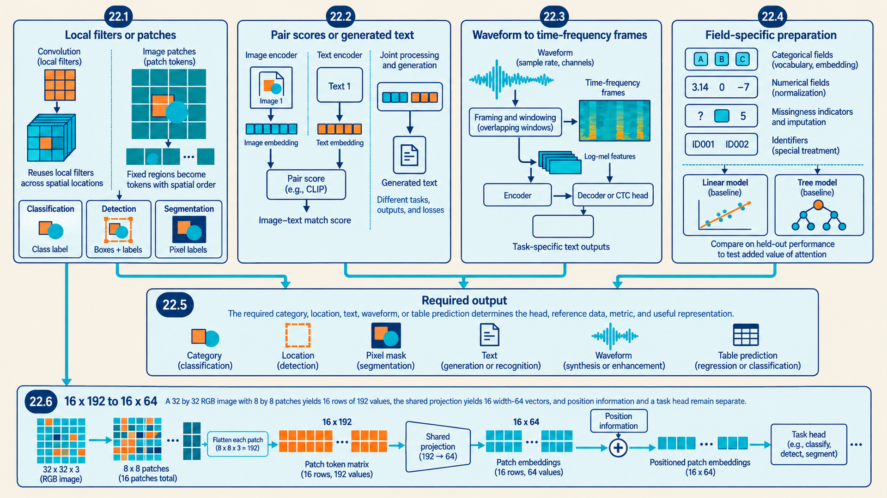
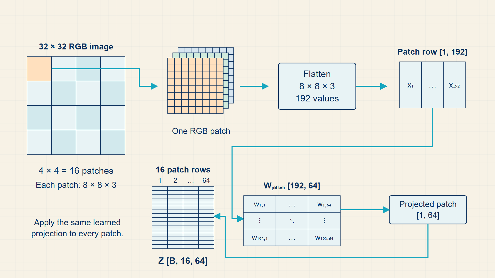
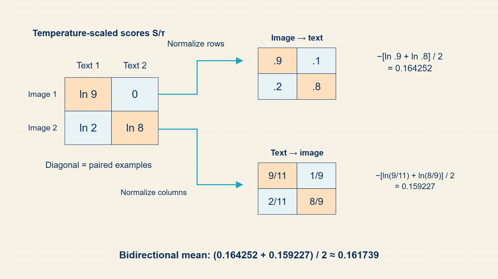
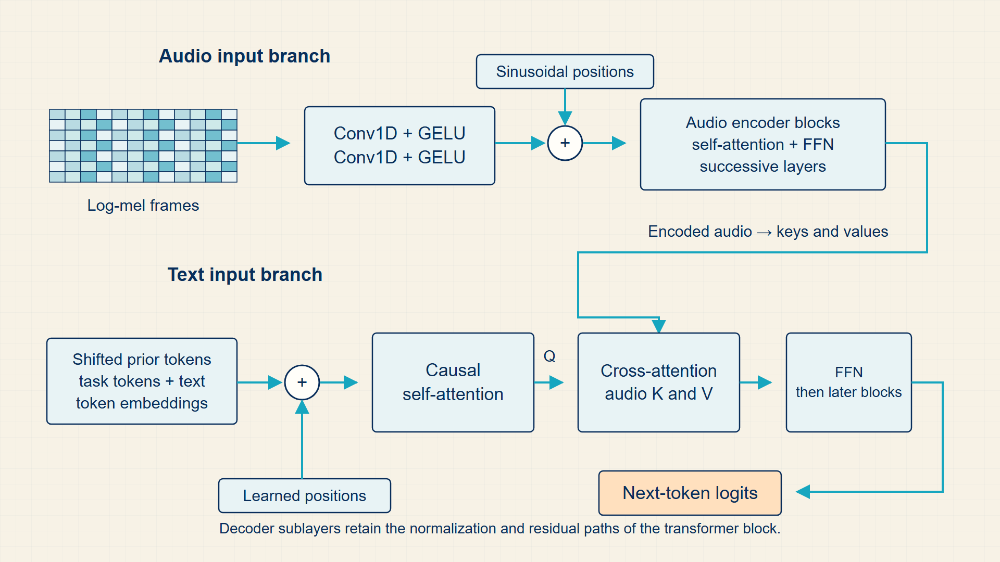

22 Images, audio, and tables: Representations and tasks
Pixels have spatial neighbors, audio samples have a time order, and table columns have different meanings and units. A representation that ignores those relationships can discard useful structure. A model first needs a numerical representation that preserves the distinctions required by its task.
Classification, matching, reconstruction, and generation require different outputs and learning signals, even when their internal vectors have the same width. Image classification returns categories. Object detection predicts categories and locations of individual objects, commonly as labeled boxes. Semantic segmentation assigns a category to each image pixel. A representation useful for one output still needs the appropriate prediction head and reference labels for another.

22.1 Local image operations and projected patches
An image classifier must relate nearby pixel values while recognizing patterns at different locations. An image channel is one measurement coordinate at each pixel, such as red, green, or blue intensity. A batch in PyTorch commonly has shape \([B,C,H,W]\): examples, channels, height, and width.
A convolution applies a local filter at many spatial locations, reusing its weights. Training a convolutional layer adjusts those weights. Deep-learning libraries usually implement cross-correlation: the filter is not spatially reversed. The expression below uses that convention with unit stride. Padding supplies any added border values.1
\[ Y_{i,j,c_{\mathrm{out}}}=b_{c_{\mathrm{out}}}+\sum_{u,v,c_{\mathrm{in}}}W_{u,v,c_{\mathrm{in}},c_{\mathrm{out}}}X_{i+u,j+v,c_{\mathrm{in}}} \tag{22.1}\]
Here \(X\) is the input, \(W\) the kernel, \(b\) an output-channel bias, and \(Y\) the output. Indices \(i,j\) locate the output. Offsets \(u,v\) range over the kernel, while \(c_{\mathrm{in}}\) and \(c_{\mathrm{out}}\) identify channels. Each output adds products across the local spatial window and all input channels.
For window [[1,2],[3,4]], a two-by-two kernel of ones and zero bias give \(1+2+3+4=10\). A learned kernel can instead give signed contributions. Reusing its weights does not force equal outputs at neighboring locations.
Fixed filters show how the weights select a property before any training. A three-by-three kernel with one at its center and zeros elsewhere copies the center value. A kernel with every entry \(1/9\) averages the nine values to blur local variation. Setting the center to 5, its four immediate neighbors to \(-1\), and the corners to zero sharpens the center against those neighbors. Its weights sum to one, so a constant region stays constant away from borders. The chosen boundary policy and output range still matter. Learning replaces these fixed choices with weights adjusted for a task.
For a signed-filter calculation, use this six-by-six input and three-by-three kernel:
\(X=\begin{bmatrix}0&0&0&0&0&0\\0&1&2&2&1&0\\0&2&4&4&2&0\\0&1&3&3&1&0\\0&1&2&3&1&0\\0&0&1&1&0&0\end{bmatrix}\), \(W=\begin{bmatrix}0&1&0\\1&-4&1\\0&1&0\end{bmatrix}\).
With stride one, no added padding, and zero bias, the first window gives \(0+0-4(1)+2+2=0\). Shifting one column gives \(0+1-4(2)+2+4=-1\). These adjacent responses differ because the filter reads different values. All 36 supplied entries belong to the input, including its nonzero bottom row. Any additional border values are determined separately by the padding setting.
The spatial stride is the number of input positions between successive window starts. It differs from storage stride, developed later in §23.3. For kernel width \(k\), positive stride \(s\), and \(p\) added positions on each side, one output dimension is
\[ n_{\mathrm{out}}=\left\lfloor\frac{n_{\mathrm{in}}+2p-k}{s}\right\rfloor+1 \tag{22.2}\]
Here \(n_{\mathrm{in}}\) is an input width or height. Dilation one means adjacent kernel entries read adjacent input positions. Under that assumption, a legal kernel start cannot exceed \(n_{\mathrm{in}}+2p-k\). Starts are spaced by \(s\), and counting the start at zero gives the final \(+1\). The padded dimension must accommodate the kernel. The formula counts spatial positions, not output channels, and applies separately to height and width.
Example: Equal output sizes from different convolution settings
Use \(X=\begin{bmatrix}1&0&1&0&1\\0&1&1&0&1\\1&0&1&1&0\\1&0&1&1&1\\0&1&1&0&0\end{bmatrix}\) and \(W=\begin{bmatrix}1&2&1\\0&1&0\\1&2&1\end{bmatrix}\). Compare (stride=1, padding=0) with (stride=2, padding=1), using zero padding and no bias. Their sizes are \(\lfloor(5-3)/1\rfloor+1=3\) and \(\lfloor(5+2-3)/2\rfloor+1=3\).
Stride 1 without padding gives [[5,6,5],[5,7,7],[5,7,5]]. Stride 2 with one zero border gives [[2,4,3],[4,7,5],[2,4,3]].
Conclusion: Both settings produce three-by-three arrays, but different window starts and border values give different entries.
Spatial pooling reduces a window within each channel, rather than the whole token sequence used in Chapter 13. Maximum pooling retains the largest local value. Mean pooling averages that window. Consider nonoverlapping two-by-two windows with stride two on
\(X=\begin{bmatrix}8&7&5&3\\12&9&5&7\\13&2&10&3\\9&4&5&14\end{bmatrix}\).
The upper-left maximum is 12, while its mean is \((8+7+12+9)/4=9\). Repeating the reductions gives maxima [[12,7],[13,14]] and means [[9,5],[7,8]].
Conclusion: Both spatial axes shrink from four to two, while channels remain separate. Maximum pooling preserves local peaks, and mean pooling preserves local averages. Neither retains every pixel or its within-window position.
A convolutional neural network, abbreviated CNN, composes local filters and nonlinear transformations. For classification, local filter responses pass through activations and further filters or pooling. A final aggregation produces features for a category-scoring head, and labeled images supply its training loss. This connects the local operation to the required output.
An output’s receptive field is the input region that can affect it. Two successive three-by-three convolutions with stride one cover a five-by-five region in the original image: each second-layer window combines neighboring first-layer windows. Larger context therefore develops through composition. With shared filters and stride one, shifting the input shifts the response away from boundaries. That property is translation equivariance. It does not by itself make the final category invariant to shifts, especially after subsampling or cropping.
A ResNet is a residual network with bypasses around learned transformations. An identity bypass needs matching shapes. A projection can supply compatible spatial size or channel width when those change.2

The pictured additions connect bypasses with transformed features. §17.3 explains their derivative routes. An identity contribution supplies another path but does not guarantee that every gradient is preserved.
A patch token is a vector representing one image region. A vision transformer, abbreviated ViT, projects patches to a common width and applies transformer blocks with position information.3 Nonoverlapping square patches of side \(P\) give
\[ N_{\mathrm{patches}}=\left(\frac{H_{\mathrm{img}}}{P}\right)\left(\frac{W}{P}\right) \tag{22.3}\]
Both image height \(H_{\mathrm{img}}\) and width \(W\) must be divisible by \(P\). Otherwise preprocessing needs a declared crop, resize, or padding policy. These remove content, change sampling, or add positions, respectively.
For the earlier single-channel patch [[1,2],[3,4]], row-wise flattening gives \((1,2,3,4)\). A projection of shape \([4,D]\) maps those four values to one width-\(D\) patch vector.
A 16-by-16 RGB patch contains \(16(16)(3)=768\) raw values. Flattening fixes their order, and a shared linear map projects them to model width \(D\). That width need not equal 768. Position information distinguishes patch locations.
A class token is an added learned input vector whose final representation can feed an image classifier. Attention lets it incorporate patch information. It is not a pixel and must be inserted if the output uses that position.
Example: Patch positions for a 224-pixel image
A 224-by-224 image with 16-by-16 patches has 14 patches per side and \(14(14)=196\) patch positions. Input shape \([B,3,224,224]\) becomes projected shape \([B,196,D]\). Adding one class token gives 197 positions.
Halving the patch side to eight gives 784 patch positions, four times as many. Ignoring an optional class token, full attention has sixteen times as many position pairs at the same width.
Conclusion: Patch size changes both sequence length and the raw width entering each projection. Prediction quality still requires evaluation on the intended task.

The picture groups RGB values within patches and includes a model-size table. Its flattened contents precede the learned projection. The published configurations below compare depth and width, not different patch sizes.4
| Variant | Layers | Width | MLP width | Heads | Parameters |
|---|---|---|---|---|---|
| Base | 12 | 768 | 3072 | 12 | 86 million |
| Large | 24 | 1024 | 4096 | 16 | 307 million |
| Huge | 32 | 1280 | 5120 | 16 | 632 million |
These are particular ViT variants, not a universal parameter-count law. Width, head count, depth, and output heads affect cost differently.
The runnable example uses nn.Conv2d with kernel and stride both 16. Each filter covers one nonoverlapping RGB patch. Flattening its weights gives a shared linear patch projection, with one bias per output coordinate.
Code example: Patchifying an image with a strided convolution
import torch
import torch.nn as nn
images = torch.randn(2, 3, 224, 224)
patch_projection = nn.Conv2d(in_channels=3, out_channels=64, kernel_size=16, stride=16)
patch_grid = patch_projection(images) # [2, 64, 14, 14]
patch_sequence = patch_grid.flatten(2).transpose(1, 2) # [2, 196, 64]
print(patch_grid.shape)
print(patch_sequence.shape)The printed shapes are [2,64,14,14] and [2,196,64]. flatten(2) joins spatial patch axes, and transpose(1,2) places positions before features. Random inputs and weights make values variable. This checks construction without a class token, position encoding, transformer, or trained classifier.
A patch sequence supplies an image representation. A task involving language still needs a connection between image and text representations.
22.2 Image-text matching, joint processing, and generation
Finding a caption that matches an image needs comparable scores across candidates. Producing a new caption also needs a generator. These are different output tasks.
CLIP, Contrastive Language-Image Pretraining, trains separate image and text encoders using paired examples. Each returns one vector per example. Dividing each nonzero vector by its Euclidean norm makes their dot product a cosine similarity. Zero vectors need a handling policy before division.5
For \(B\) matched pairs, \(S_{ij}\) compares image \(i\) with text \(j\). This \([B,B]\) matrix has intended matches on its diagonal. Temperature \(\tau>0\) divides these scores as in §7.2 before two classification losses:
\[ L_{\mathrm{CLIP}}=\frac{1}{2}\left[\operatorname{CE}\!\left(\frac{S}{\tau},y\right)+\operatorname{CE}\!\left(\frac{S^{T}}{\tau},y\right)\right] \tag{22.4}\]
Each CE receives logits and calculates row-wise cross-entropy as in §8.1, then averages the \(B\) rows using §8.5’s included-count convention. The first direction chooses text for an image. Transposition makes each text choose an image. Labels \(y=(1,\ldots,B)\) select the diagonal, while zero-based code uses torch.arange(B).
Example: Both directions from one score matrix
Choose scaled logits \(S/\tau=\log\begin{bmatrix}0.9&0.1\\0.2&0.8\end{bmatrix}\), with an elementwise logarithm. These constructed scores are not measured encoder outputs. They are compatible with normalized vectors at a suitable temperature.
For example, choose \(\tau=0.1\) and image vectors as the first two coordinate basis vectors in three dimensions. Each text vector takes its corresponding column of \(S\) as its first two coordinates. A third coordinate completes its norm to one because their squared sum is below one.
Row normalization gives matching probabilities 0.9 and 0.8. Their mean loss is \((-\log0.9-\log0.8)/2\approx0.164252\), or 0.164 nats.
Column normalization uses that same matrix. Text 1’s matching probability is \(0.9/1.1=9/11\), and text 2’s is \(0.8/0.9=8/9\). Their mean loss is approximately 0.159227 nats. Averaging both directions gives approximately 0.161739 nats.
Conclusion: Normalizing across different candidate axes changes probabilities. Copying the image-row probabilities into the reverse direction would give the wrong symmetric loss.

The picture contains a comparison grid without numeric axes or a matching diagonal. The calculation supplies those roles. The objective favors paired entries relative to other batch candidates. Another caption may still describe the same image, so an off-diagonal pair is not necessarily semantically wrong. A shared parameter update need not change every pair’s Euclidean distance in the pictured direction.
Separate encoders support retrieval because stored candidates can be encoded in advance. ViLT, the Vision-and-Language Transformer, instead sends projected image patches and word embeddings obtained by §13.1’s lookup into one encoder. Position and modality information distinguish their locations and input types. Common width permits joining the sequence.6
A two-stream fusion model retains separate image and text sequences, then exchanges information through cross-attention. For example, text queries can read image keys and values, while a separate cross-attention operation lets image queries read text. This differs from a joint encoder, where one self-attention calculation operates over the combined positions. It also differs from CLIP’s independently encoded vectors, which interact only in the comparison score. The chosen task determines whether this pair-specific interaction is worth recomputing for each candidate.
Visual grounding locates the image region described by text, such as the box around “the red cup.” It needs spatial outputs and reference regions during supervised training. A high image-text matching score alone gives neither coordinates nor a verified location.
ViLT trains image-text matching and selected masked-word prediction. A matching head judges the pair, while a masked-word head predicts an original word using joint context. Consider office as the masked word. An additional word-patch alignment term contributes to the matching loss. It uses optimal transport to distribute correspondence mass between word and patch representations while minimizing total matching cost under the transport constraints. That comparison is not an attention matrix or a third equally independent objective.7
For captioning or open-ended visual question answering, abbreviated VQA, a generation component produces text. A language decoder can read encoded image features through cross-attention. Another arrangement projects visual features into its input sequence beside the prompt. It then generates tokens using image information and earlier output. A matching encoder alone does not implement this loop.
Discrete image codes serve another purpose: reconstruction and later modeling of image content. A codebook is a finite table of learned reconstruction vectors. A VQ-VAE, vector-quantized variational autoencoder, maps an encoder vector to its nearest codebook vector, then decodes from that selection. The integer code identifies the selected vector but is not the vector itself.8
For a chosen encoder output \((0.8,0.1)\) and codebook vectors \((0,0)\), \((1,0)\), and \((0,1)\), squared distances are 0.65, 0.05, and 1.45. Selection returns the second vector, \((1,0)\). The decoder receives it, losing the original difference \((-0.2,0.1)\) from that entry.
Hard selection has no useful ordinary encoder derivative. A straight-through approximation passes the decoder gradient to the encoder as though selection were an identity map. Reconstruction trains the decoder and, through that approximation, the encoder. A codebook term moves the selected vector toward a fixed encoder output. A commitment term moves the encoder output toward the fixed selected vector. Stopping gradients on the opposite side separates these roles.9
Conclusion: Matching, joint processing, generation, and discrete reconstruction need different calculations and targets. None follows solely from equal vector widths. Audio adds a time axis whose content also needs a suitable representation.
22.3 Sampled sound, spectral frames, and speech models
A recording can contain the same frequencies at different times, producing different words. One spectrum for the entire recording would discard when those components occur. Short overlapping windows retain a time index alongside local frequency content.
A waveform is a sequence of sampled amplitudes. Its sampling rate \(f_s\) counts samples per second in each channel. Sample \(n\) occurs at time \(n/f_s\) under a fixed-rate convention. Amplitude units or normalization depend on the recording system.
Sampling also limits which frequencies can be distinguished. Without suitable filtering before sampling, components above half the sampling rate can appear as lower frequencies, a distortion called aliasing. At 16,000 samples per second, preserving arbitrary content above 8,000 Hz requires a different sampling setup. A later spectral transform cannot recover distinctions already lost in sampling.
PCM, pulse-code modulation, stores quantized amplitudes at those sample times. Bit depth determines the available codes. Stereo has two channels, with one sample from each in an audio frame. That frame differs from the longer analysis window below.

At 44,100 sample times per second, two channels, and 16 bits per channel sample, one second uses \(44{,}100(2)(16/8)=176{,}400\) payload bytes. Headers and compression are excluded. Calling one stereo frame a single per-channel sample would lose the factor of two.
An analysis window selects and weights a local run of samples. Its hop size is the number of samples between successive starts. A rectangular window weights each included sample by one. A tapered window reduces discontinuities at the window edges, while changing the separation of nearby frequencies.
Frequency measures cycles per second, in hertz. A short-time Fourier transform, abbreviated STFT, compares each weighted window with cosine and sine patterns. For transform length \(N\) equal to window length and hop \(H_{\mathrm{hop}}\), calculate two ordinary real sums:
\[ \begin{aligned}a_{m,k}&=\sum_{n=0}^{N-1}x[mH_{\mathrm{hop}}+n]w[n]\cos\!\left(\frac{2\pi kn}{N}\right),\\ b_{m,k}&=-\sum_{n=0}^{N-1}x[mH_{\mathrm{hop}}+n]w[n]\sin\!\left(\frac{2\pi kn}{N}\right).\end{aligned} \tag{22.5}\]
Frame index \(m\) selects the start, local index \(n\) runs from zero to \(N-1\), and \(w[n]\) supplies window weights. The sample inside the frame is \(x[mH_{\mathrm{hop}}+n]\). The cosine sum \(a_{m,k}\) and negative sine sum \(b_{m,k}\) are two coordinates for frequency bin \(k\). Together they form a complex coefficient \(X[m,k]=a_{m,k}+i b_{m,k}\), where \(i^2=-1\). Euler’s identity provides the shorter equivalent expression
\[ X[m,k]=a_{m,k}+i b_{m,k}=\sum_{n=0}^{N-1}x[mH_{\mathrm{hop}}+n]w[n]\exp\!\left(-\frac{2\pi i kn}{N}\right) \tag{22.6}\]
The complex notation packages the two real sums. It does not add another measurement. The two coordinates measure agreement with both phases of a frequency pattern.
Bin \(k\) represents frequency \(k f_s/N\) before accounting for equivalent negative-frequency bins. For real part \(a\) and imaginary part \(b\), magnitude \(\sqrt{a^2+b^2}\) measures response strength. Phase is the angle of the pair \((a,b)\), describing its sine-cosine alignment. Power is squared magnitude, a different quantity. For real input, positive and negative frequency coefficients form conjugate pairs.
Example: Zero mean does not mean silence
Use \((1,0,-1,0)\), a rectangular window, \(N=4\), and no centering or padding. At \(k=0\), all exponential weights are one. The constant, or DC, coefficient is \(1+0-1+0=0\).
At \(k=1\), the weights are \((1,-i,-1,i)\). The contributions \((1,0,1,0)\) sum to 2. The full transform is \((0,2,0,2)\), with the last entry the conjugate-frequency counterpart of the second.
For samples \((1,0,-1,0,1,0)\) and hop two, the second window is \((-1,0,1,0)\). Its \(k=1\) coefficient is \(-2\). Both frames have magnitude 2 at that bin. Their coefficients 2 and \(-2\) differ by a half-cycle phase angle.
Conclusion: Zero DC indicates cancellation of the constant component. The nonzero frequency response retains the oscillation. Moving the frame changes the samples and can change phase even when magnitude stays equal.
Counting only complete windows without centering or padding gives
\[ \mathrm{frames}=\left\lfloor\frac{\mathrm{samples}-\mathrm{window}}{\mathrm{hop}}\right\rfloor+1 \tag{22.7}\]
Sample count must be at least the positive window length, and hop must be positive. Six samples, window four, and hop two give \(\lfloor(6-4)/2\rfloor+1=2\) frames. Different padding, centering, or transform-length policies need their own count. The full manual transform can be stored as two time frames by four frequency bins. For unbatched real input and a real window, torch.stft with return_complex=True returns frequency before frame. With the default onesided=None, it uses one-sided treatment for this real input and keeps \(\lfloor N/2\rfloor+1\) nonredundant bins. With n_fft=4, hop_length=2, and center=False, this six-sample example therefore returns shape [3,2]. Setting onesided=False retains all four bins and returns [4,2].10
A fast Fourier transform, abbreviated FFT, is an algorithm for calculating the discrete Fourier transform efficiently. It does not itself choose or slide windows. STFT applies a transform separately to successive windows. Recovering a waveform from a full transform needs phase as well as magnitude and compatible inverse/window rules. Magnitude alone generally cannot supply exact reconstruction.
A mel spectrogram groups spectral energy into overlapping bands spaced on a perceptual frequency scale. The filterbank forms weighted sums of magnitude or power under a declared convention. A logarithm compresses their range after a floor prevents taking the logarithm of zero. These log-mel features are not raw amplitudes. Window, hop, filterbank, power convention, and log scaling must match the trained model.
Whisper is an encoder-decoder speech model mapping log-mel features to text tokens. Its encoder receives the features through convolutional processing. Its causal decoder uses cross-attention to encoded audio and generates text with task, language, and optional timestamp markers.11

The pictured route has the source-conditioned roles from §18.2. Task and language tokens identify the requested behavior. Timestamp tokens describe time locations. Recorded transcripts supply training targets, while generated tokens supply later decoder inputs at inference. A transcript can be compared with reference words using word error rate, or WER. After a declared word normalization and alignment, count substitutions \(S\), deletions \(D\), and insertions \(I\), then divide \(S+D+I\) by the reference word count \(N>0\). One substitution and one deletion against ten reference words give WER 0.2. Extra insertions can make this ratio exceed one. It measures transcription edits, not every aspect of speech understanding. Quality depends on language, recording conditions, task, and training data. A result for one language cannot establish equal quality for all languages.
A reference-conditioned speech generator has a different input-output contract. Reference audio supplies an encoded description of the voice or speaking style, while supplied text specifies what to say. A generation component combines that conditioning with the text representation and produces an acoustic representation or waveform. A waveform decoder is needed when the intermediate output is acoustic features or codes. This process generates sound rather than a transcript, so its evaluation includes intelligibility and voice or style matching, not just transcription error.
Other systems use different representations and outputs. SpeechVerse combines continuous audio features with text instructions and returns text. Its frozen audio encoder feeds trainable one-dimensional downsampling, which shortens the sequence and matches text-embedding width. The resulting vectors join text embeddings before a language model with an adapter.12
Its first stage fits the audio connection and layer-combination weights on transcription. A later stage adds LoRA for broader tasks while pretrained audio and language weights remain frozen. A keyword-extraction task returns a list of words. Generating a waveform requires a different output path. The two training stages do not update identical parameter sets.13
AudioLM models tokenized audio and can decode a waveform. Its w2v-BERT route discretizes learned features into semantic tokens. Its SoundStream codec route supplies acoustic tokens at several quantization levels. These emphasize longer content structure and signal detail without guaranteeing a perfect separation.14
Generation predicts semantic tokens, then coarse acoustic tokens conditioned on them. Fine acoustic prediction adds detail, and codec decoding reconstructs a waveform. Each conditional stage reuses autoregressive prediction ideas. The semantic and acoustic token streams identify the intermediate representations. The staged generation procedure and listening evaluation establish how the system uses them.15
Conclusion: Amplitudes, spectral features, continuous learned vectors, and discrete audio codes are different objects. Their consumers and target outputs determine the required conversion. Speech models do not all require the same spectrogram front end.
22.4 Heterogeneous fields and tabular baselines
A table row can combine a category, a measured quantity, and a missing value. Its column positions identify fields, rather than neighboring times or image regions. Treating column order as a natural sequence would add an assumption the data does not supply.
Consider three fictional rows: Leia/female/150/49, Luke/male/172/77, and Han/male/180/80. Height is in centimetres and weight in kilograms. The first field identifies a row, while the second is categorical. No target is supplied, so these records alone define neither classification nor regression. An identifier is not automatically a useful prediction feature.
Categories can select embedding rows. Numerical fields need a declared treatment of scale. Missing values need a policy, such as imputation with a missingness indicator. Fitted statistics and mappings must use training data only, and unseen categories need a fallback. The task and available evidence govern whether a sensitive field belongs in the model.
TabTransformer contextualizes categorical embeddings with attention, then joins them with continuous features for an MLP. In the original architecture, normalized continuous values join after attention. They do not all enter it as tokens.16
With \(m\) categorical fields of width \(d\) and \(c\) continuous values, the final width is \(md+c\). For three categorical fields of width four and three numerical fields, it is \(3(4)+3=15\). This separate dimension example does not describe the four-field rows above. Field identity must stay associated with each category embedding. Other tabular transformers may tokenize numerical fields, but that is a different design.
A regularized linear model provides an inspectable baseline after compatible encoding. A decision tree instead splits records through successive feature tests and predicts at a leaf. Its thresholds can model nonlinear interactions without treating fields as sequence neighbors.
Gradient-boosted decision trees add trees sequentially to improve predictions under a chosen loss. At round \(m\), let the current function be \(F_{m-1}\). Each record supplies the negative loss derivative with respect to its prediction. A new tree \(h_m\) fits those values, and \(F_m=F_{m-1}+\eta h_m\) adds a scaled correction.17
For half-squared error \(L=(y-F)^2/2\), that negative derivative is the residual \(y-F\). Targets \((3,1)\) and current predictions \((2,2)\) give residuals \((1,-1)\). If a chosen tree fits them exactly, rate 0.1 gives predictions \((2.1,1.9)\). The summed half-squared loss falls from 1 to 0.81.
Conclusion: Residual fitting describes this squared-error case. Other losses supply different negative derivatives. The chosen correction demonstrates an update, not a trained benchmark result or a guaranteed held-out improvement.
Compare linear, tree, and attention models using the same split, target, metric, preprocessing boundary, and search budget. Record fit time, inference cost, and missing/noisy-field behavior alongside quality. Interactions or pretraining can motivate an attention candidate, but a ranking from one dataset and setting cannot establish superiority across other tasks.
22.5 Choosing representations by the required output
Input structure determines which information a representation can preserve. The task determines whether that information helps. Image, audio, and table models therefore need comparisons on common criteria without requiring one architecture for every modality.
The spatial outputs introduced at the chapter opening need matching reference annotations. Object detection commonly uses a category and bounding box for each object, while semantic segmentation uses a reference category at each pixel. A single category score or pooled image vector cannot by itself supply those locations. Text-to-image generation reverses the output requirement: supplied text conditions a generated image. Its image-generation mechanism is separate from the classification and text-generation paths developed here.
Local image convolutions reuse weights across neighborhoods. Projected patches make image regions available as attention positions. Both need a task head and evaluation, and convolution and attention can coexist.
For audio, time-frequency features expose local spectral changes. Learned waveform and codec representations preserve different detail. Transcription needs text output, while audio continuation needs a route back to a waveform. A front end alone supplies neither result.
For tables, categories, scales, missingness, and sample size constrain fitting. Linear and boosted-tree baselines help determine whether a more costly attention model improves the relevant held-out outcome.
Separate image-text encoders can reuse stored candidate vectors. Joint processing recomputes interactions for each pair. Captioning and VQA additionally need text generation. Output requirements, available pretraining, training data, and measured resource limits determine which comparison is useful.
These choices identify candidate computations. Their array dimensions can be checked before a full experiment.
22.6 A patch sequence through its projection
A patch count does not yet establish the width or ordering of vectors entering a transformer. The separate 32-by-32 RGB example follows that conversion through a shared projection.
With patch side eight, applying the count formula from §22.1 gives \(N=(32/8)(32/8)=16\) positions. Each patch contains \(8(8)(3)=192\) raw values. A fixed channel/spatial order defines its row, and the projection must use that same order. For channel-first input, let \(c\in\{0,1,2\}\) select the channel and \(u,v\in\{0,\ldots,7\}\) the row and column inside one patch. Flattening in that order assigns index \(j=64c+8u+v\). Channel 1, row 2, column 3 therefore contributes at index 83. Projection row 83 must multiply that same pixel value. If input order changes, the corresponding rows of the projection must be permuted with it to preserve the operation.
\[ Z=\operatorname{flatten}(\mathrm{patches})W_{\mathrm{patch}},\quad Z\in\mathbb{R}^{B\times N\times D} \tag{22.8}\]
Flattened patches have shape \([B,N,192]\), \(W_{\mathrm{patch}}\) has shape \([192,64]\), and \(Z\) has shape \([B,16,64]\). The equation omits bias. A bias-enabled projection adds one width-64 vector at each position, as in the Conv2d example.
The multiplication contracts the 192-value axis, leaving examples and patch positions separate. Adding a class token would give 17 positions. Position information still requires its configured encoding before order-dependent model use.
Conclusion: Sixteen patches of 192 values become sixteen width-64 vectors. This checks the input representation that an image transformer could receive. Classification, matching, or generation still requires the appropriate model and output head.
Logical axes specify the computation. Chapter 23 examines how those axes refer to stored values, including shared storage, copies, and device placement.
Chapter checkpoint
Does zero DC in \((1,0,-1,0)\) mean every Fourier coefficient is zero? Does a CLIP matching score generate a caption? Do all original TabTransformer fields enter attention?
Answer: No. The transform is \((0,2,0,2)\), so the oscillation remains. Matching ranks pairs, while captioning needs a generation component. Original TabTransformer attention processes categorical embeddings, then joins their outputs with continuous values before an MLP.
Why can two convolution settings return the same three-by-three size yet different values?
Answer: The size formula counts legal window starts. Stride and padding can change the windows despite equal counts. The kernel products must be checked at their actual locations.
PyTorch Contributors. (2026). Conv2d. PyTorch 2.12 documentation. The operation uses cross-correlation without spatial kernel reversal.↩︎
He, K., Zhang, X., Ren, S., & Sun, J. (2016). Deep residual learning for image recognition. Proceedings of the IEEE Conference on Computer Vision and Pattern Recognition, 770–778. The original blocks use identity shortcuts when shapes match and learned projections in selected shape-changing paths.↩︎
Dosovitskiy, A., et al. (2021). An image is worth 16x16 words: Transformers for image recognition at scale. International Conference on Learning Representations, §3 and Table 1.↩︎
Dosovitskiy, A., et al. (2021). An image is worth 16x16 words: Transformers for image recognition at scale. International Conference on Learning Representations, §3 and Table 1.↩︎
Radford, A., et al. (2021). Learning transferable visual models from natural language supervision. Proceedings of Machine Learning Research, 139, 8748–8763, Figure 3. The score matrix here is a constructed calculation.↩︎
Kim, W., Son, B., & Kim, I. (2021). ViLT: Vision-and-language transformer without convolution or region supervision. Proceedings of Machine Learning Research, 139, 5583–5594, §3 and Figure 3.↩︎
Kim, W., Son, B., & Kim, I. (2021). ViLT: Vision-and-language transformer without convolution or region supervision. Proceedings of Machine Learning Research, 139, 5583–5594, §3 and Figure 3.↩︎
van den Oord, A., Vinyals, O., & Kavukcuoglu, K. (2017). Neural discrete representation learning. Advances in Neural Information Processing Systems, 30, §§3.1–3.2. The distance example uses chosen vectors.↩︎
van den Oord, A., Vinyals, O., & Kavukcuoglu, K. (2017). Neural discrete representation learning. Advances in Neural Information Processing Systems, 30, §§3.1–3.2. The distance example uses chosen vectors.↩︎
PyTorch Contributors. (2026). STFT. PyTorch 2.12 documentation. The book’s frame count assumes complete windows without centering or padding.↩︎
Radford, A., et al. (2023). Robust speech recognition via large-scale weak supervision. Proceedings of Machine Learning Research, 202, 28492–28518, §§2.2–2.3 and Figure 1.↩︎
Das, N., et al. (2024). SpeechVerse: A large-scale generalizable audio language model. arXiv:2405.08295, version 2, §§2.1–2.3 and Figure 2.↩︎
Das, N., et al. (2024). SpeechVerse: A large-scale generalizable audio language model. arXiv:2405.08295, version 2, §§2.1–2.3 and Figure 2.↩︎
Borsos, Z., et al. (2023). AudioLM: A language modeling approach to audio generation. IEEE/ACM Transactions on Audio, Speech, and Language Processing, 31, 2523–2533, §III.↩︎
Borsos, Z., et al. (2023). AudioLM: A language modeling approach to audio generation. IEEE/ACM Transactions on Audio, Speech, and Language Processing, 31, 2523–2533, §III.↩︎
Huang, X., Khetan, A., Cvitkovic, M., & Karnin, Z. (2020). TabTransformer: Tabular data modeling using contextual embeddings. arXiv:2012.06678, §2.↩︎
Friedman, J. H. (2001). Greedy function approximation: A gradient boosting machine. The Annals of Statistics, 29(5), 1189–1232.↩︎